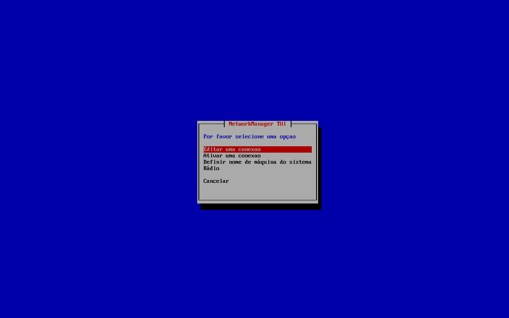
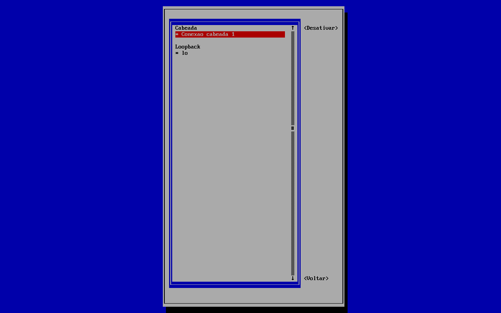

NetworkManager e iwd
No Arch, a rede não "simplesmente funciona" sozinha: alguém precisa pedir um endereço ao roteador, escolher o Wi-Fi e configurar o DNS. Esse "alguém" é um gerenciador de rede, e você escolhe qual na instalação. O mais comum, e o da VM do guia, é o NetworkManager, controlado pelo comando nmcli. Nesta aula você aprende a usá-lo e conhece as alternativas; a conferência da rede com ip, ping e ss tem aula própria.
- Ver o estado da rede com
nmcli general,nmcli deviceenmcli connection. - Conectar a um Wi-Fi com
nmclie com onmtui. - Configurar IP fixo e DNS (e de onde vem o
/etc/resolv.conf). - Onde continuar o diagnóstico (
ip,ping,ss) depois de configurar. - Quando usar iwd ou systemd-networkd em vez do NetworkManager.
Quem cuida da rede no Arch
Conectar à rede envolve várias tarefas: ligar a placa, se associar ao Wi-Fi (com a senha), pedir um endereço IP por DHCP (Dynamic Host Configuration Protocol: o roteador "empresta" um endereço), definir a rota para a internet e os servidores de DNS (que traduzem archlinux.org em números). O Arch não vem com nada disso ligado; na instalação você instala e habilita um gerenciador. A VM do guia recebeu o NetworkManager, como mostra o log da instalação:
#> arch-chroot /mnt systemctl enable NetworkManager sshd
$ pacman -Q networkmanager wpa_supplicant networkmanager 1.58.1-2 wpa_supplicant 2:2.12-1 $ systemctl is-active NetworkManager systemd-networkd systemd-resolved active « o NetworkManager inactive « o systemd-networkd (vem no pacote systemd, desligado) inactive « o systemd-resolved (idem)
Nunca deixe dois gerenciadores ligados ao mesmo tempo (NetworkManager + systemd-networkd, ou NetworkManager + dhcpcd): eles brigam pela placa e a conexão cai e volta. Se trocar de um para outro, faça disable --now no antigo antes de ligar o novo.
nmcli: o estado da rede
nmcli = NetworkManager command-line interface. Ele fala português quando o sistema está em português.
nmcli general
$ nmcli general STATE CONNECTIVITY WIFI-HW WIFI WWAN-HW WWAN METERED conectado completa faltando habilitado faltando habilitado não (adivinhado)
| Coluna | Valor | Significado |
|---|---|---|
STATE | conectado | Há uma conexão ativa |
CONNECTIVITY | completa | Chega à internet. O NetworkManager testa baixando um arquivo de ping.archlinux.org; limitada = rede local sem internet; portal = Wi-Fi de hotel pedindo login. |
WIFI-HW / WIFI | faltando / habilitado | Não há placa Wi-Fi (é uma VM com cabo); o Wi-Fi, em software, está habilitado |
WWAN | … | Modem de celular (4G/5G) |
METERED | não (adivinhado) | Se a conexão é "tarifada" (dados móveis) |
nmcli device: as placas
$ nmcli device DEVICE TYPE STATE CONNECTION enp0s3 ethernet conectado Conexão cabeada 1 lo loopback conectado (externamente) lo
Um dispositivo é uma placa de rede. enp0s3 é o nome da placa com fio da VM: en = ethernet, p0s3 = a posição dela no barramento PCI (barramento 0, slot 3). Placas Wi-Fi costumam se chamar wlan0 ou wlp2s0. O lo (loopback) é a rede interna do próprio computador (127.0.0.1).
nmcli connection: os perfis
Uma conexão (perfil) é um conjunto de configurações: "esta rede Wi-Fi, com esta senha, IP automático". Um dispositivo usa um perfil por vez. Você pode ter vários perfis (casa, trabalho) para a mesma placa.
$ nmcli connection show NAME UUID TYPE DEVICE Conexão cabeada 1 5c85cc50-5b40-34c6-9635-e7b2db0c9e02 ethernet enp0s3 lo baf8cb5c-c5ea-4179-aecc-b7ff5ef1e7c2 loopback lo
O perfil "Conexão cabeada 1" foi criado sozinho pelo NetworkManager quando viu o cabo. Os detalhes (com -f você escolhe os campos; sem ele, são mais de 100 linhas):
$ nmcli -f connection.id,connection.type,connection.interface-name,connection.autoconnect,ipv4.method,ipv4.addresses,ipv4.gateway,ipv4.dns,ipv6.method connection show 'Conexão cabeada 1' connection.id: Conexão cabeada 1 connection.type: 802-3-ethernet « 802.3 = o padrão do cabo de rede connection.interface-name: enp0s3 connection.autoconnect: sim « conecta sozinho no boot ipv4.method: auto « auto = DHCP ipv4.addresses: -- « nenhum endereço fixo ipv4.gateway: -- ipv4.dns: -- ipv6.method: auto
E o que o DHCP entregou de fato, visto pelo dispositivo:
$ nmcli -f GENERAL.DEVICE,GENERAL.TYPE,GENERAL.HWADDR,GENERAL.STATE,IP4.ADDRESS,IP4.GATEWAY,IP4.DNS,IP6.ADDRESS device show enp0s3 GENERAL.DEVICE: enp0s3 GENERAL.TYPE: ethernet GENERAL.HWADDR: 08:00:27:74:B2:03 « endereço físico (MAC) da placa GENERAL.STATE: 100 (conectado) IP4.ADDRESS[1]: 10.0.2.15/24 « o IP da máquina IP4.GATEWAY: 10.0.2.2 « o "roteador" IP4.DNS[1]: 10.0.2.3 « o servidor de DNS IP6.ADDRESS[1]: fd17:625c:f037:2:3074:376a:4fe9:621c/64 IP6.ADDRESS[2]: fe80::9c83:cf89:6133:11ca/64
Os endereços 10.0.2.x são da rede virtual do VirtualBox; no seu computador, provavelmente serão 192.168.0.x ou 192.168.1.x.
Onde os perfis ficam
Perfis que você cria ou modifica são gravados em /etc/NetworkManager/system-connections/ (só o root lê: guardam senhas de Wi-Fi). O perfil automático do cabo, enquanto ninguém mexe nele, existe só na memória, em /run:
$ sudo nmcli -f NAME,FILENAME connection show NAME FILENAME Conexão cabeada 1 /run/NetworkManager/system-connections/Conexão cabeada 1.nmconnection lo /run/NetworkManager/system-connections/lo.nmconnection $ sudo ls -l /etc/NetworkManager/system-connections/ total 0
Wi-Fi com nmcli
A VM do guia não tem placa Wi-Fi, então a lista de redes volta vazia (e com código 0, sem erro):
$ nmcli radio WIFI-HW WIFI WWAN-HW WWAN faltando habilitado faltando habilitado $ nmcli device wifi list $ echo $? 0
Num notebook, os comandos são estes. Ilustrativo (sem Wi-Fi na VM, as saídas não puderam ser conferidas; a rede "CasaDaAna" é inventada):
$ nmcli device wifi list « redes visíveis: SSID, sinal, segurança $ nmcli device wifi rescan « procura de novo $ nmcli device wifi connect CasaDaAna --ask « pergunta a senha sem deixá-la no histórico $ nmcli device wifi connect CasaDaAna password 'minha senha' $ nmcli connection show « o perfil "CasaDaAna" foi criado e fica salvo $ nmcli connection down CasaDaAna « desconectar $ nmcli connection up CasaDaAna « reconectar $ nmcli connection delete CasaDaAna « esquecer a rede $ nmcli radio wifi off « desligar o Wi-Fi (modo avião)
- nmcli device wifi connect
- Procura a rede, cria um perfil com o nome dela e conecta.
- CasaDaAna
- O SSID (nome da rede). Com espaços, entre aspas:
'Casa da Ana'. - password '…'
- A senha. Ela fica no histórico do Bash; o
--askevita isso.
Na primeira conexão, por ser uma mudança no sistema, o polkit pode pedir a senha de administrador (usuários do wheel numa sessão local costumam ser liberados). Depois, o perfil reconecta sozinho sempre que a rede estiver ao alcance.
nmtui: menus no terminal
Se você prefere menus, o nmtui (text user interface, instalado junto com o NetworkManager) abre uma tela azul com três opções: Editar uma conexão, Ativar uma conexão (lista as redes Wi-Fi; Enter conecta e pede a senha) e Definir nome de máquina do sistema. Use as setas, Tab e Enter; Esc volta. É o jeito mais fácil de conectar ao Wi-Fi logo depois da instalação, num TTY sem interface gráfica.

nmtui num console da VM. Ele aparece em português (repare nas palavras sem acento, como "conexao": é a tradução do próprio programa). Captura real.
Conexao cabeada 1, ativa, com *) e o lo. Num notebook, as redes Wi-Fi aparecem aqui numa seção própria. Captura real.Com um desktop instalado, o ícone de rede do GNOME ou do KDE conversa com o mesmo NetworkManager: perfis criados no nmcli aparecem lá, e vice-versa.
IP fixo
Um servidor em casa (veja Servidor Caseiro) costuma precisar de um endereço que não muda. Com o NetworkManager, você muda o perfil: método manual, o endereço, o gateway e o DNS.
Mudar o IP da VM derrubaria o SSH de todos os autores. Os comandos abaixo são os corretos, mas a sessão não foi rodada. Faça isso no seu computador com acesso físico (ou um segundo caminho de acesso), nunca por SSH na única conexão.
$ sudo nmcli connection modify 'Conexão cabeada 1' \ > ipv4.method manual \ > ipv4.addresses 192.168.0.50/24 \ > ipv4.gateway 192.168.0.1 \ > ipv4.dns '1.1.1.1 9.9.9.9' $ sudo nmcli connection up 'Conexão cabeada 1' « aplica (reconecta)
- connection modify 'Conexão cabeada 1'
- Muda o perfil (depois disso ele passa a ser gravado em
/etc/NetworkManager/system-connections/). - ipv4.method manual
- Sem DHCP: você informa tudo.
autovolta ao DHCP. - ipv4.addresses 192.168.0.50/24
- O IP e o tamanho da rede (
/24= os 3 primeiros números identificam a rede, a máscara255.255.255.0). Escolha um endereço fora da faixa que o roteador distribui. - ipv4.gateway
- O roteador.
- ipv4.dns
- Os servidores de DNS, separados por espaço.
Para voltar ao automático:
$ sudo nmcli connection modify 'Conexão cabeada 1' ipv4.method auto ipv4.addresses '' ipv4.gateway '' ipv4.dns '' $ sudo nmcli connection up 'Conexão cabeada 1'
Muitas vezes é mais simples deixar o Arch em DHCP e configurar no roteador uma "reserva de DHCP" para o MAC da placa (o GENERAL.HWADDR): o roteador sempre entrega o mesmo IP, e nada muda no Linux.
DNS: quem traduz os nomes
Os programas descobrem qual servidor de DNS usar lendo o /etc/resolv.conf. Na VM, quem escreve esse arquivo é o próprio NetworkManager, com o que recebeu do DHCP:
$ ls -l /etc/resolv.conf -rw-r--r-- 1 root root 92 16 out 13:06 /etc/resolv.conf « arquivo comum, não um link $ cat /etc/resolv.conf # Generated by NetworkManager search lan nameserver 10.0.2.3 nameserver fd17:625c:f037:2::3 $ getent hosts archlinux.org 2604:cac0:a104:d::3 archlinux.org « a tradução funcionando
Não edite esse arquivo à mão: o NetworkManager o reescreve a cada conexão. Para escolher o DNS, use ipv4.dns no perfil (como no IP fixo) e, para ignorar o DNS do roteador, ipv4.ignore-auto-dns yes.
E o resolvectl?
Em muitos tutoriais aparece o resolvectl, do systemd-resolved (um serviço de DNS com cache). No Arch ele vem no pacote systemd, mas desligado, e por isso o comando falha:
$ resolvectl status Failed to connect to service /run/systemd/resolve/io.systemd.Resolve: Arquivo ou diretório inexistente $ echo $? 1
Para usá-lo com o NetworkManager (ilustrativo; não foi feito na VM): sudo systemctl enable --now systemd-resolved e trocar o arquivo por um link, sudo ln -sf ../run/systemd/resolve/stub-resolv.conf /etc/resolv.conf. O NetworkManager percebe o link e passa a entregar o DNS ao resolved. Vantagens: cache, DNS por conexão (útil com VPN), DNS-over-TLS. Para uso doméstico, o padrão (sem resolved) funciona bem.
O nome da máquina
$ cat /etc/hostname /etc/hosts notebook # Static table lookup for hostnames. # See hosts(5) for details. 127.0.0.1 localhost ::1 localhost
O /etc/hosts é uma "agenda" consultada antes do DNS: uma linha 192.168.0.50 servidor faz ping servidor funcionar na sua rede. Mudar o nome da máquina: sudo hostnamectl hostname novo-nome (ou pelo nmtui).
Conferir a rede: ip, ping, ss
O NetworkManager configura a rede; para conferir o resultado, use as ferramentas do kernel, que vêm no base: ip mostra as placas, os endereços e as rotas; ping testa se um destino responde; ss lista as portas abertas. Na VM, o resumo é este:
$ ip -br a lo UNKNOWN 127.0.0.1/8 ::1/128 enp0s3 UP 10.0.2.15/24 fd17:625c:f037:2:3074:376a:4fe9:621c/64 fe80::9c83:cf89:6133:11ca/64 $ ip route default via 10.0.2.2 dev enp0s3 proto dhcp src 10.0.2.15 metric 100 « o gateway (o mesmo IP4.GATEWAY do nmcli) 10.0.2.0/24 dev enp0s3 proto kernel scope link src 10.0.2.15 metric 100
Cada linha dessas saídas, o ping com seus códigos de saída, o tracepath, o ss -tulpn e o roteiro de diagnóstico "placa → gateway → IP → nome" têm uma aula própria: ip, ping, ss. Para testar sites e DNS (curl, dig), veja curl, wget, dig.
Missão: mostre os endereços IP da máquina e descubra o nome da placa com fio.
Alternativas ao NetworkManager
| Ferramenta | O que é | Wi-Fi | Bom para |
|---|---|---|---|
NetworkManager (networkmanager) | Gerenciador completo: cabo, Wi-Fi, VPN, celular; nmcli, nmtui e ícone no desktop | Sim (usa wpa_supplicant ou iwd por baixo) | Desktops e notebooks; o padrão do GNOME e do KDE |
iwd (iwd) | O "daemon de Wi-Fi" da Intel, leve e moderno; comando iwctl. É o que a ISO de instalação do Arch usa. | Só Wi-Fi (faz DHCP próprio se habilitado) | Notebooks minimalistas; ou como motor de Wi-Fi do NetworkManager |
| systemd-networkd | Vem no systemd; configuração em arquivos .network em /etc/systemd/network/ | Não sozinho (junte com iwd) | Servidores, VMs, containers, rede fixa |
dhcpcd | Só um cliente DHCP | Não | Máquinas simples com cabo |
Na VM, o iwd não está instalado (pacman -Q iwd → erro: o pacote "iwd" não foi encontrado) e o systemd-networkd está desabilitado. Se um dia quiser usar o iwd como motor de Wi-Fi do NetworkManager (conecta mais rápido), a Arch Wiki explica: instale o iwd, crie /etc/NetworkManager/conf.d/wifi_backend.conf com [device] e wifi.backend=iwd, e reinicie o NetworkManager (sem habilitar o serviço iwd separado).
No ambiente de instalação: iwctl
Na ISO, antes de existir NetworkManager, o Wi-Fi é pelo iwctl, o cliente do iwd. Os comandos são estes; a aula Internet no Live mostra cada um com as saídas e as telas reais do live (senha certa, senha errada, station wlan0 show linha por linha, redes salvas em /var/lib/iwd):
#> iwctl device list #> iwctl station wlan0 scan #> iwctl station wlan0 get-networks #> iwctl --passphrase 'minha senha' station wlan0 connect CasaDaAna
A rede e a senha que você conecta no live não passam para o sistema instalado: nele, conecte de novo com o nmcli ou o nmtui (acima).
Quando não funciona
O que aconteceu: o gerenciador não foi instalado ou habilitado no chroot (o pacstrap básico não traz nenhum).
Como confirmar: systemctl is-active NetworkManager → inactive, ou Unit NetworkManager.service not found.
Como resolver: se estiver instalado, sudo systemctl enable --now NetworkManager. Se não estiver, volte ao pendrive, monte e entre no sistema com arch-chroot, instale com pacman -S networkmanager e habilite (veja Resgate com chroot).
$ ping -c 1 nao-existe.invalid ping: nao-existe.invalid: Nome ou serviço desconhecido
O que aconteceu: o nome não foi traduzido: erro de digitação, ou o DNS não está funcionando.
Como confirmar: ping -c 3 1.1.1.1 funciona? Então a internet está ok e o problema é DNS. Veja cat /etc/resolv.conf.
Como resolver: sudo nmcli connection modify NOME ipv4.dns '1.1.1.1' e nmcli connection up NOME.
O que aconteceu: você usou resolvectl, mas o systemd-resolved não está ligado (o padrão do Arch).
Como resolver: use cat /etc/resolv.conf e nmcli device show para ver o DNS, ou habilite o resolved (seção DNS).
O que aconteceu: quase sempre, dois gerenciadores ligados ao mesmo tempo.
Como confirmar: systemctl is-active NetworkManager systemd-networkd dhcpcd iwd: mais de um active (o iwd ativo é normal só se você o configurou como motor do NetworkManager e ele foi iniciado por ele).
Como resolver: sudo systemctl disable --now nos que sobram. Para ver o que o NetworkManager diz: journalctl -u NetworkManager -b.
O que aconteceu: a placa está bloqueada (botão de modo avião), sem driver/firmware, ou o rádio está desligado.
Como confirmar: nmcli radio (WIFI-HW deve ser habilitado), rfkill list (bloqueios), ip link (a placa existe?), journalctl -k | grep -i firmware.
Como resolver: nmcli radio wifi on; rfkill unblock wifi; instale o firmware (pacote linux-firmware, que no Arch é dividido em partes: confira se a da sua placa está instalada).
Referência
| Comando | O que faz |
|---|---|
nmcli general | Estado geral e conectividade |
nmcli device · nmcli device show enp0s3 | Placas · detalhes (IP, gateway, DNS) |
nmcli connection show · … show NOME | Perfis · configurações de um perfil |
nmcli connection up|down|delete NOME | Conecta · desconecta · apaga um perfil |
nmcli device wifi list · rescan | Redes Wi-Fi visíveis |
nmcli device wifi connect SSID --ask | Conecta a um Wi-Fi |
nmcli radio wifi on|off | Liga/desliga o Wi-Fi |
sudo nmcli connection modify NOME ipv4.method manual ipv4.addresses … | IP fixo |
nmtui | Menus no terminal |
ip -br a · ip route | Conferir endereços e gateway (detalhes em ip, ping, ss) |
cat /etc/resolv.conf · getent hosts nome | DNS em uso · testar uma tradução |
sudo hostnamectl hostname nome | Muda o nome da máquina |
Exercícios
1. As placas
Complete para ver as placas de rede e o estado de cada uma:
2. O roteador
Na VM, ip route mostra default via 10.0.2.2 dev enp0s3. Qual é o IP do gateway?
3. Reconectar
Complete para ativar de novo o perfil "Conexão cabeada 1":
4. ping -c 3 1.1.1.1 funciona, mas ping -c 3 archlinux.org dá "Nome ou serviço desconhecido". Onde está o problema?
5. Por que resolvectl status falha num Arch padrão com NetworkManager?
6. Você quer o Wi-Fi rápido de um notebook minimalista, sem NetworkManager. O que usar?
Resumo
- No Arch você escolhe e habilita o gerenciador de rede; um só por vez.
nmcli general,deviceeconnectionmostram o estado;nmcli device wifi connectenmtuiconectam.- IP fixo e DNS se mudam no perfil (
nmcli connection modify), não editando arquivos. - O
/etc/resolv.confé escrito pelo NetworkManager; osystemd-resolvedvem desligado. - Para conferir a rede:
ip -br aeip route; o diagnóstico completo está em ip, ping, ss. - Alternativas:
iwd(Wi-Fi leve) esystemd-networkd(servidores).
Na Arch Wiki: NetworkManager (em português) tem todos os comandos do nmcli, o motor iwd e a integração com o resolved; o iwd (em português) e o systemd-networkd têm páginas próprias; o diagnóstico geral e os comandos ip estão em Network configuration (em português); o DNS, em Domain name resolution e systemd-resolved.